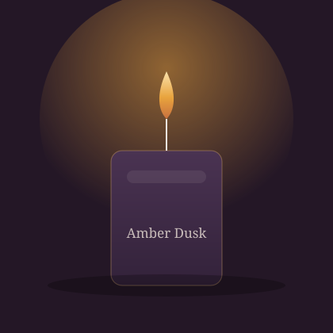

Hand-Poured in Small Batches
Ember & Wick makes slow-burning soy candles designed for the hour after the day winds down — scented with warm, honest notes and poured by hand in a small studio, not a factory line.
We started Ember & Wick in 2021 with two pots, a kitchen table, and a stubborn belief that candles should smell like something you actually remember — cedar after rain, a fig tree in August, salt air off an evening tide. Every candle is still poured, labelled, and packed by hand.

Our Craft
Most mass-produced candles use paraffin wax, which burns fast and releases a heavier, sootier smoke. We use 100% natural soy wax instead, which burns roughly 30–40% longer per jar and keeps the fragrance honest instead of chemical.
Each scent is developed over weeks of test pours before it ever reaches the shop — we adjust wick size, fragrance load, and pour temperature by hand until the burn is clean edge-to-edge.
What You Can Expect
No paraffin, no synthetic fillers — just soy wax sourced from American growers.
Every jar is poured, trimmed, and inspected individually — never on an assembly line.
Recycled kraft boxes, soy-based ink labels, and reusable glass jars once the wax is gone.